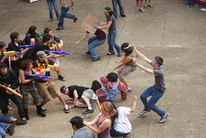

Humans Vs. Zombies Application 👨💻🧟♂️🎓:

I worked with fellow Harvey Mudd students to develop a Flutter mobile application for the Claremont Colleges’ Humans vs. Zombies sports competition.
In addition to development, my responsibilities included writing the specifications for the Flutter GUI and participating in regular team meetings on development progress that often included the app’s target user base of past and future participants in the Human vs Zombies games, for feedback to inform our process.
We developed the app with the following requirements:
- Clear, Readable, and Documented Code - Critical for creating a good usable product and for future editors to maintain and change the app.
- Game Management by Mods - Moderators' ability to start, end, and reset an HvZ game is critical for the app's usability over multiple games.
- Player Registration and Account Creation - Essential for tracking distinct players and testing the game.
- Player Login - Necessary for players to access their distinct account and stats, critical for gameplay management.
- Admin Login for Mods with Different UI - Mods need a distinctive way to manage the game, critical for enabling mods to edit the game in ways players can't.
- Zombie Players can Scan Human QR Feed Codes - Crucial to gameplay, too complicated for mods to manage outside of the app.
- Printing Feed Codes for Non-App Users - Important to include non-app-using players in the game.
- Purchasing Upgrades with Brains for Zombies - Essential for game functionality, implementing brain currency transactions.
- Brain Transfer System - Basic functionality for the game, crucial for managing the brain currency.
- Accessible Player List - Essential for gameplay to know the role of each player.
- Humans Remaining Count on Home Screen - Adds to the player data summary and enhances home screen engagement.
- Clear and Organized Visual Interface - Critical for app usability, regardless of functionality.
- Easy Access to Important Game Information - Useful for players, but information could alternatively be sent via emails.
- Mission Information Updates by Mods - Critical for game management by moderators.
- Mods Adjusting Player Status - Necessary for game management, especially for manual adjustments.
- Detailed Map of the 7Cs - Gives players a layout of event locations, critical for new students and gameplay orientation.
- Player Statistics Tracking - Important for gameplay and moderator information organization.
- Privacy-Respecting Default Location Settings - Critical for respecting players' privacy.
- Story Tab - Enhances player engagement by providing an organized and coherent story.
- Easy Access to Current Mission Information - Valuable for missions, enhances player access to tasks and mission summaries.
- Optional Location Services for Easier Navigation - Helps new players navigate.
- Moderator Notifications and Reminders - Essential for gameplay organization and communication.
- Customizable Player Notifications - Prevents overwhelming players with unnecessary information.
- Attendance Reporting via QR Scanning - Low-cost, valuable feature for mods and players, integrating with mission-specific notifications.
- Map Showing Important Information - Assists gameplay by dynamically displaying key places.
- Mod-adjustable Important Locations on Map - Helps reduce gameplay confusion, though difficult to implement for the first release.
- Descriptions of Active Legendary Upgrades - Allows players to understand and view upgrades.
- List of Legendary Upgrade Holders - Useful for tracking legendaries, could be integrated with the main player list.
- Different UI for Human and Zombie Players - Smoothens gameplay by restricting access based on player status.
- Game Data Saving by Mods - Helps Mods track game state.
- Self-reporting for Turned Humans - Adds convenience during final missions.
- Zombie Stun Timer Display - Convenient for gameplay.
- Display of Player Numbers During Key Missions - Adds to the game experience.
- Mission Countdown Banner on Home Screen - Makes a more engaging gameplay experience.
- Stun Reporting by Human Players - Introduces a new feature for human players.
- Personal Player Profile Page - Nice for personal stat viewing.
- View Location of Active Moderators - Useful for emergencies.
- Player Reporting of Large Groups via Map Pins - Enhances gameplay interaction.
- Stun Timer for Zombies - Adds fun.
- Custom Messages from Zombies on Feed Code Scan - Contributes to player interaction.
- Task-specific Day Missions and Quests - Helps organize mission tasks and can be managed by players.
- Location Sharing Options - Offers flexibility in sharing locations.
- Direct Communication Channel to Mods - Valuable for reporting.
- Zombie Ancestry Tree - Interesting for tracking player and game history.
- Integrated Large Group Chats - Convenient.
- Chat Support for Picture and Video Files - Enhances chat functionality.
- Automatic Removal from Human Chat upon Turning - Streamlines chat participation.
- Final Message Option for Turned Humans - Adds a farewell feature.
This app was ultimately created to and accomplished providing an enhanced gameplay experience for the players in the Claremont Colleges’ traditional Humans vs Zombies sports competition.